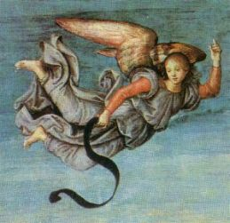
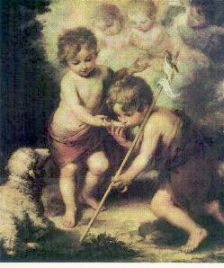

Os Anjos representam mais um milagre extraordinário do CRIADOR,
testemunho eloquente do zelo Divino, em querer amparar, ajudar, proteger
e salvar todos os seus filhos, que ELE gerou no interior do Seu Santíssimo,
incomensurável e generoso Coração. ELE se preocupa em auxiliar a
humanidade na caminhada existencial com a finalidade de possibilitar
as pessoas cumprirem dignamente a missão que ELE Mesmo nos
concedeu com o dom da vida, a fim de que vivendo dentro do
projeto de DEUS, concluído o tempo de exílio terrestre, retornemos à pátria
trinitária, de onde viemos, para usufruirmos a amizade e o amor sem limites
de nossa MÃE SANTÍSSIMA e alcançarmos a plena saciedade, a luz
inextinguível, a alegria eterna e a felicidade perfeita, em íntima união
com o PAI ETERNO, o FILHO e o ESPÍRITO SANTO.
 É ao CRIADOR
que glorificamos quando louvamos embevecidos e agradecemos a intervenção dos
Anjos que ELE criou e são dignos de seu Divino Amor. Desse modo, toda
admiração que os Anjos merecem, mostra-nos como o SENHOR é grande,
como é inesgotável a sua bondade e infinita a sua misericórdia, e como deve ser
amado acima de todas as criaturas!
É ao CRIADOR
que glorificamos quando louvamos embevecidos e agradecemos a intervenção dos
Anjos que ELE criou e são dignos de seu Divino Amor. Desse modo, toda
admiração que os Anjos merecem, mostra-nos como o SENHOR é grande,
como é inesgotável a sua bondade e infinita a sua misericórdia, e como deve ser
amado acima de todas as criaturas!
Sejam as
nossas derradeiras palavras de carinho e de fervoroso amor ao CRIADOR através
de JESUS, seu dileto FILHO e SENHOR nosso, iluminados e inspirados na Luz do
ESPÍRITO SANTO Paráclito, unindo os nossos corações e nossas vozes a Hierarquia
Celeste para louvar a Glória de DEUS, junto com as Dominações que com fidelidade
e respeito adoram-NO e as Potestades e Virtudes que reverentes apressam-se em
servi-LO, enquanto os Querubins e Serafins diante do trono do PAI ETERNO,
não cessam de cantar emocionados em uma única e sonora voz:
"SANTO, SANTO,
SANTO, SENHOR DEUS do Universo! Glória ao SENHOR por toda a criação
e por sua infinita Bondade! Glória e Louvor a sua Misericórdia e ao Amor eterno
do SANTÍSSIMO PAI! Amém!"


ORAÇÕES
Santo Anjo da
Guarda
Santo Anjo do Senhor, meu zeloso guardador, já que a ti me confiou
a piedade Divina, sempre me rege, me guarda, me governa e ilumina. Amém.
São Miguel Arcanjo
São Miguel Arcanjo,
defendei-nos neste combate, sede nosso auxílio contra a maldade e ciladas do
demônio. Instante e humildemente vos pedimos que DEUS sobre ele impere,
e vós, Príncipe da milícia celeste, com esse poder Divino, precipitai no Inferno
a satanás e aos outros espíritos malignos que vagueiam pelo mundo para
perdição das almas. Amém.
São
Miguel Arcanjo
Príncipe
dos exércitos celeste, vencedor do dragão infernal, recebestes de DEUS a
força e o poder, para aniquilar pela humildade, a soberba do príncipe das
trevas. Nós vos suplicamos insistentemente, alcançai-nos a verdadeira
humildade de coração, a fidelidade inabalável no continuo cumprimento da
Vontade de DEUS, assim como, fortaleza no sofrimento e na necessidade.
Socorrei-me e dai-me a vossa proteção, para que não desfaleça ao comparecer
perante o trono da justiça de DEUS. Amém.
São Gabriel
Arcanjo
Santo Anjo da Encarnação,
fiel mensageiro de DEUS, abri meu ouvido, até para as mais leves admoestações
e toques da graça, do Coração amoroso de NOSSO SENHOR. Permanecei sempre
comigo, eu vos suplico, a fim de que possa compreender devidamente a Palavra de
DEUS, seguir as suas inspirações e com docilidade e obediencia, cumprir aquilo
que o CRIADOR quer de mim. Fazei que eu esteja sempre pronto e vigilante,
para que o SENHOR não me encontre indiferente e distante,
quando ELE chegar. Amém.
São Rafael
Arcanjo
Mensageiro
do Amor de DEUS, eu vo-lo peço, feri o meu coração com um amor ardente!
Fazei que jamais cure esta ferida, para que, também na vida cotidiana, a chaga
desse amor me estimule a perseverar sempre no caminho da caridade e do amor
fraterno. Amém.
F I M

Próxima Página 
 Página Anterior
Página Anterior
Retorna ao Índice